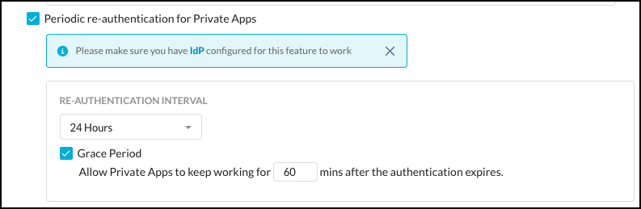
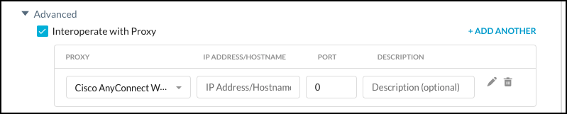
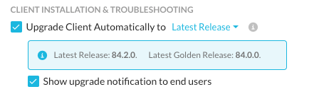
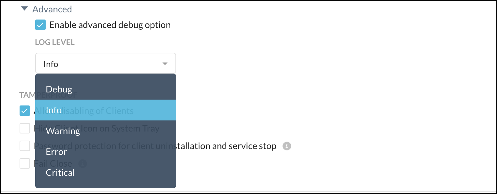
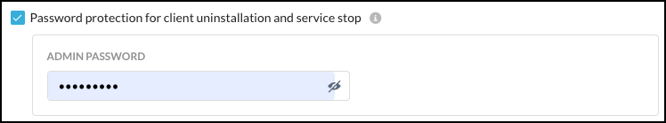

Netskope Client Admin Configuration
You can configure system-wide settings using the Client Configuration dialog box. To access client configuration pages:
Login to your tenant with admin credentials
Go to Settings > Security Cloud Platform > Devices
Click Client Configurations in the top right corner to open the Client Configuration page.
Click New Client Configuration to add a new global configuration.
Additional configurations can be created to obtain granular control over the behavior of the Netskope Client at a group or OU level by creating a new configuration. If these configurations are applied to groups, they must be prioritized to determine which configuration is applied to the Client when there is an overlap in group membership.
Note
Multiple configurations can be created and applied to different OUs or Groups but only an OU or a Group can be selected.

Enter a name and select an OU or User Group from the dropdown list. The Client Configuration dialog box enables you to use these options:
Enable DTLS (Data Transport Layer Security). Optionally enter an MTU value.

On-Prem Detection: For On-Premises Detection, enter either your DNS FQDN and IP address or HTTP FQDN and connection timeout period that can be resolved with a known IP address. By enabling this option, you can detect the location of an endpoint. If the endpoint is on-premises or off-premises the Client tunnels the traffic based on the traffic mode configured for dynamic steering.
The following types of bypass traffic will be tunneled when the Client is on-premises. Bypass traffic options also depend on dynamic steering configuration
Cert pinned apps
Exception domains
Exception categories
Important
The Netskope Client must be running version 72 or later to use this feature.
For HTTP, the Client will look for the HTTP response code 200, and if successful, the device is deemed to be on-premises. Also enter a connection timeout value. The default is 10 seconds, and the max is 60 seconds.

Periodic Re-authentication for Private Apps makes users re-authenticate after a certain period of time, with the option to add a grace period. A Netskope Private Access license is required to use this feature.
 Click the Advanced toggle to see this option. Interoperate with Proxy (IP address/hostname and port are default selections for the Cisco AnyConnect Web Security proxy). You can change the hostname and/or port. Select Static Web Proxy option from the Proxy dropdown list to add all details of all proxy endpoints used in your network.
Note
The following are important points to note when enter proxy details:
At least one proxy server must be configured in the client endpoint.
If a Static Web Proxy is entered, then only one Cisco AnyConnect Web Security Proxy is allowed.
 Enable device classification and Client-based user notification when the Client is not tunneling traffic. This disables the Client when GRE, IPSec, Secure Forwarder and Data Plane On-Premises steering methods are detected.
Perform SNI check allows using Server Name Indication in addition to DNS to determine steering options when multiple domains use the same IP address.
Upgrade Client Automatically to a specific release version. You can choose from the following upgrade options:
Latest Release - All clients will be upgraded the latest released version.
Latest Golden Release - All clients will be upgraded to the latest golden release. To know more about golden releases, check out this Client Downloads page.
Specific Golden Release - You can set all clients to be upgraded to a specific golden release. After selecting this option, you can select the golden release from the list of available versions. In addition, you can select Opt-in Upgrade to ensure the clients are upgraded to the latest minor or hot fix version of the selected golden release. To know more about golden releases, check out this Client Downloads page.
You can also choose to send upgrade notifications to users.
Uninstall Clients automatically when users are removed from Netskope.
Allow users to unenroll when the Client is provisioned through an IdP.
Click the Advanced toggle to see the Enable advanced debugging option. Choose a log type from the dropdown list.
 Allow users to disable the Client.
Hide Client icons in the system tray.
Password protection for Client uninstallation and service stop (Windows clients only).
 Fail Close blocks all traffic when a tunnel to Netskope is not established or a user device is not provisioned in the Netskope Cloud. Domain-based, IP-based, and cert-pinned exceptions will be applied, but category-based exceptions will be blocked. When a user is detected as on-premises, the exceptions will be blocked.
When Fail Close is enabled, the Password Protection for Client Uninstallation and Service Stop become enabled and Allow Disabling of Clients options becomes disabled. With Fail Close, you can Exclude Private Apps Traffic, so Private Access is not affected, and also Show Notifications.
Important
Fail close does not work the Netskope Client r78 with macOS 11 (Big Sur) due to the Network Extensions change in macOS. There is no impact on Windows with the r78 Client. Fail Close does work on Catalina, or below, using the r77 Client (only).
Client Configuration Encryption
Client configuration files generated in the admin config and downloaded by the client can be encrypted via the encryptClientConfig feature flag. This flag is disabled by default. To enable encryption reach out to Netskope Support.
Note
The encryption is performed on all files except the nsbranding file. The nsbranding file is encrypted via the encryptbranding feature flag. This can be enabled via a support ticket. Also, files generated by the user device are not encrypted.
Log files sent for debugging are decrypted before creating a zip bundle of all the log files.